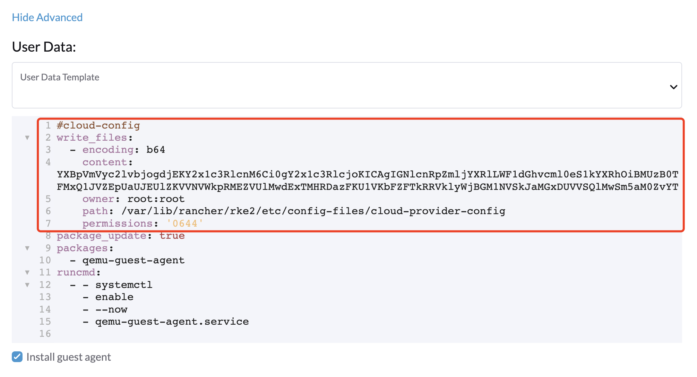
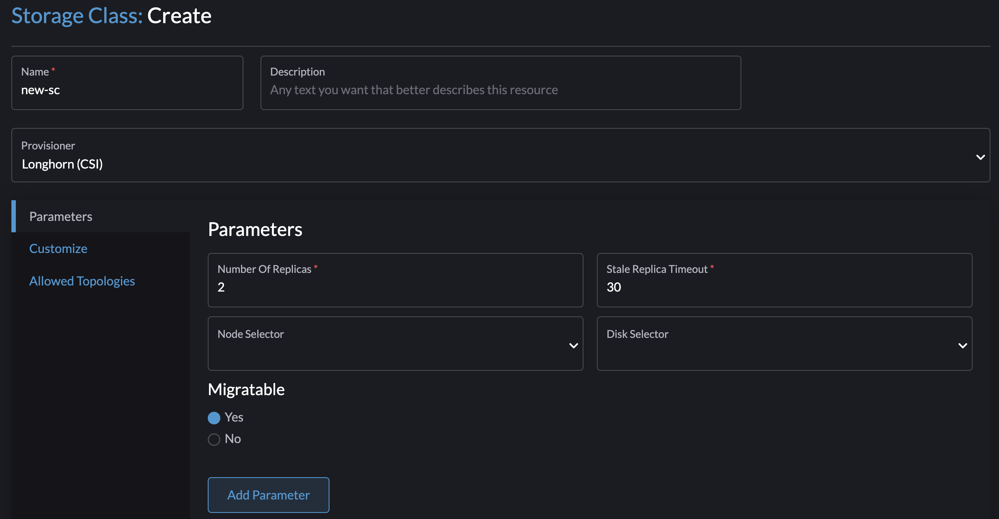
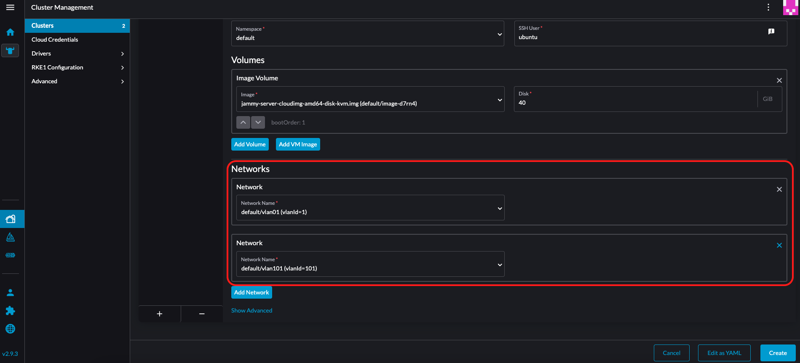
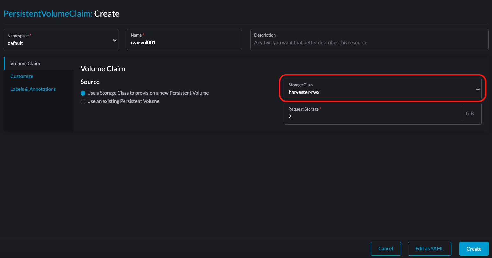

|
Este documento foi traduzido usando tecnologia de tradução automática de máquina. Sempre trabalhamos para apresentar traduções precisas, mas não oferecemos nenhuma garantia em relação à integridade, precisão ou confiabilidade do conteúdo traduzido. Em caso de qualquer discrepância, a versão original em inglês prevalecerá e constituirá o texto official. |
Driver CSI do Harvester
O driver de Interface de Armazenamento de Contêineres (CSI) do Harvester fornece uma interface CSI padrão usada por clusters Kubernetes convidados. Ele se conecta ao cluster host e conecta volumes do host às máquinas virtuais para fornecer desempenho nativo de armazenamento.
O Driver CSI do Harvester suporta os seguintes recursos:
| Versão do Driver CSI do Harvester | SUSE Virtualization Versão | Estratificação de Armazenamento | RWX Volumes | Redimensionamento Online | Armazenamento de Terceiros | Instantâneos de Volume |
|---|---|---|---|---|---|---|
0.1.15 |
Todas as versões |
✔ |
✖ |
✖ |
✖ |
✖ |
0.1.20 |
v1.4 e posteriores |
✔ |
✔ |
✖ |
✖ |
✖ |
0.1.24 |
v1.6 e posteriores |
✔ |
✔ |
✔ |
✔ |
✖ |
0.1.25 |
v1.7 e posteriores |
✔ |
✔ |
✔ |
✔ |
✔ |
|
Um problema conhecido na v0.1.20 do Driver CSI do Harvester faz com que volumes fiquem presos quando o cluster host está executando uma SUSE Virtualization versão que foi lançada antes da v1.4.0. Esse problema foi corrigido na v0.1.21. Se o seu sistema estiver afetado, você pode seguir a solução alternativa sugerida.
|
Implantação
Pré-requisitos
-
O cluster Kubernetes é construído sobre SUSE Virtualization máquinas virtuais.
-
As SUSE Virtualization máquinas virtuais que funcionam como nós Kubernetes convidados estão no mesmo namespace.
|
Atualmente, o Driver CSI do Harvester suporta apenas volumes de leitura e gravação (RWO) de nó único. Verifique o problema #1992 para informações sobre o possível suporte a volumes de somente leitura (ROX) e de leitura e gravação (RWX) em múltiplos nós. |
Implantação com o driver de nó Harvester RKE2
Ao criar um cluster Kubernetes usando o driver de nó Rancher RKE2, o driver CSI do Harvester será implantado automaticamente quando o provedor de nuvem Harvester for selecionado.

Instalar o driver CSI manualmente no cluster RKE2
Se você preferir instalar o driver CSI do Harvester sem habilitar o provedor de nuvem Harvester, pode seguir os passos a seguir:
Pré-requisitos da instalação manual
Certifique-se de que você tenha os seguintes pré-requisitos em vigor:
-
Você tem
kubectlejqinstalados em seu sistema. -
Você tem o arquivo
kubeconfigpara o seu cluster Harvester bare metal. Você pode encontrar o arquivokubeconfigem um dos nós de gerenciamento do Harvester no caminho/etc/rancher/rke2/rke2.yaml.export KUBECONFIG=/path/to/your/harvester-kubeconfig
Realize os seguintes passos para implantar o driver CSI do Harvester manualmente:
Implantar o driver CSI do Harvester
-
Gere o
cloud-config. Você pode gerar o arquivocloud-configusando o script generate_addon_csi.sh. Ele está disponível no repositório harvester/harvester-csi-driver.<serviceaccount name>geralmente corresponde ao nome do seu cluster convidado, e<namespace>deve corresponder ao namespace do pool de máquinas../generate_addon_csi.sh <serviceaccount name> <namespace> RKE2
A saída gerada será semelhante à seguinte:
########## cloud-config ############ apiVersion: v1 clusters: - cluster: <token> server: https://<YOUR HOST HARVESTER VIP>:6443 name: default contexts: - context: cluster: default namespace: default user: rke2-guest-01-default-default name: rke2-guest-01-default-default current-context: rke2-guest-01-default-default kind: Config preferences: {} users: - name: rke2-guest-01-default-default user: token: <token> ########## cloud-init user data ############ write_files: - encoding: b64 content: YXBpVmVyc2lvbjogdjEKY2x1c3RlcnM6Ci0gY2x1c3RlcjoKICAgIGNlcnRpZmljYXRlLWF1dGhvcml0eS1kYXRhOiBMUzB0TFMxQ1JVZEpUaUJEUlZKVVNVWkpRMEZVUlMwdExTMHRDazFKU1VKbFZFTkRRVklyWjBGM1NVSkJaMGxDUVVSQlMwSm5aM0ZvYTJwUFVGRlJSRUZxUVd0TlUwbDNTVUZaUkZaUlVVUkVRbXg1WVRKVmVVeFlUbXdLWTI1YWJHTnBNV3BaVlVGNFRtcG5NVTE2VlhoT1JGRjNUVUkwV0VSVVNYcE5SRlY1VDFSQk5VMVVRVEJOUm05WVJGUk5lazFFVlhsT2FrRTFUVlJCTUFwTlJtOTNTa1JGYVUxRFFVZEJNVlZGUVhkM1dtTnRkR3hOYVRGNldsaEtNbHBZU1hSWk1rWkJUVlJaTkU1VVRURk5WRkV3VFVSQ1drMUNUVWRDZVhGSENsTk5ORGxCWjBWSFEwTnhSMU5OTkRsQmQwVklRVEJKUVVKSmQzRmFZMDVTVjBWU2FsQlVkalJsTUhFMk0ySmxTSEZEZDFWelducGtRa3BsU0VWbFpHTUtOVEJaUTNKTFNISklhbWdyTDJab2VXUklNME5ZVURNeFZXMWxTM1ZaVDBsVGRIVnZVbGx4YVdJMGFFZE5aekpxVVdwQ1FVMUJORWRCTVZWa1JIZEZRZ292ZDFGRlFYZEpRM0JFUVZCQ1owNVdTRkpOUWtGbU9FVkNWRUZFUVZGSUwwMUNNRWRCTVZWa1JHZFJWMEpDVWpaRGEzbEJOSEZqYldKSlVESlFWVW81Q2xacWJWVTNVV2R2WjJwQlMwSm5aM0ZvYTJwUFVGRlJSRUZuVGtsQlJFSkdRV2xCZUZKNU4xUTNRMVpEYVZWTVdFMDRZazVaVWtWek1HSnBZbWxVSzJzS1kwRnhlVmt5Tm5CaGMwcHpMM2RKYUVGTVNsQnFVVzVxZEcwMVptNTZWR3AxUVVsblRuTkdibFozWkZRMldXWXpieTg0ZFRsS05tMWhSR2RXQ2kwdExTMHRSVTVFSUVORlVsUkpSa2xEUVZSRkxTMHRMUzBLCiAgICBzZXJ2ZXI6IGh0dHBzOi8vMTkyLjE2OC4wLjEzMTo2NDQzCiAgbmFtZTogZGVmYXVsdApjb250ZXh0czoKLSBjb250ZXh0OgogICAgY2x1c3RlcjogZGVmYXVsdAogICAgbmFtZXNwYWNlOiBkZWZhdWx0CiAgICB1c2VyOiBya2UyLWd1ZXN0LTAxLWRlZmF1bHQtZGVmYXVsdAogIG5hbWU6IHJrZTItZ3Vlc3QtMDEtZGVmYXVsdC1kZWZhdWx0CmN1cnJlbnQtY29udGV4dDogcmtlMi1ndWVzdC0wMS1kZWZhdWx0LWRlZmF1bHQKa2luZDogQ29uZmlnCnByZWZlcmVuY2VzOiB7fQp1c2VyczoKLSBuYW1lOiBya2UyLWd1ZXN0LTAxLWRlZmF1bHQtZGVmYXVsdAogIHVzZXI6CiAgICB0b2tlbjogZXlKaGJHY2lPaUpTVXpJMU5pSXNJbXRwWkNJNklreGhUazQxUTBsMWFsTnRORE5TVFZKS00waE9UbGszTkV0amNVeEtjM1JSV1RoYVpUbGZVazA0YW1zaWZRLmV5SnBjM01pT2lKcmRXSmxjbTVsZEdWekwzTmxjblpwWTJWaFkyTnZkVzUwSWl3aWEzVmlaWEp1WlhSbGN5NXBieTl6WlhKMmFXTmxZV05qYjNWdWRDOXVZVzFsYzNCaFkyVWlPaUprWldaaGRXeDBJaXdpYTNWaVpYSnVaWFJsY3k1cGJ5OXpaWEoyYVdObFlXTmpiM1Z1ZEM5elpXTnlaWFF1Ym1GdFpTSTZJbkpyWlRJdFozVmxjM1F0TURFdGRHOXJaVzRpTENKcmRXSmxjbTVsZEdWekxtbHZMM05sY25acFkyVmhZMk52ZFc1MEwzTmxjblpwWTJVdFlXTmpiM1Z1ZEM1dVlXMWxJam9pY210bE1pMW5kV1Z6ZEMwd01TSXNJbXQxWW1WeWJtVjBaWE11YVc4dmMyVnlkbWxqWldGalkyOTFiblF2YzJWeWRtbGpaUzFoWTJOdmRXNTBMblZwWkNJNkltTXlZak5sTldGaExUWTBNMlF0TkRkbU1pMDROemt3TFRjeU5qWXpNbVl4Wm1aaU5pSXNJbk4xWWlJNkluTjVjM1JsYlRwelpYSjJhV05sWVdOamIzVnVkRHBrWldaaGRXeDBPbkpyWlRJdFozVmxjM1F0TURFaWZRLmFRZmU1d19ERFRsSWJMYnUzWUVFY3hmR29INGY1VnhVdmpaajJDaWlhcXB6VWI0dUYwLUR0cnRsa3JUM19ZemdXbENRVVVUNzNja1BuQmdTZ2FWNDhhdmlfSjJvdUFVZC04djN5d3M0eXpjLVFsTVV0MV9ScGJkUURzXzd6SDVYeUVIREJ1dVNkaTVrRWMweHk0X0tDQ2IwRHQ0OGFoSVhnNlMwRDdJUzFfVkR3MmdEa24wcDVXUnFFd0xmSjdEbHJDOFEzRkNUdGhpUkVHZkUzcmJGYUdOMjdfamR2cUo4WXlJQVd4RHAtVHVNT1pKZUNObXRtUzVvQXpIN3hOZlhRTlZ2ZU05X29tX3FaVnhuTzFEanllbWdvNG9OSEpzekp1VWliRGxxTVZiMS1oQUxYSjZXR1Z2RURxSTlna1JlSWtkX3JqS2tyY3lYaGhaN3lTZ3o3QQo= owner: root:root path: /var/lib/rancher/rke2/etc/config-files/cloud-provider-config permissions: '0644' -
Copie e cole o conteúdo de
cloud-init user dataem Machine Pools > Show Advanced > User Data.
O arquivo
cloud-provider-configserá criado após você aplicar os dados do usuário do cloud-init acima. Você pode encontrá-lo nos nós Kubernetes convidados no caminho/var/lib/rancher/rke2/etc/config-files/cloud-provider-config. -
Configure o Cloud Provider para Default - RKE2 Embedded ou External.

-
Selecione Create para criar seu cluster RKE2.
-
Uma vez que o cluster RKE2 esteja pronto, instale o gráfico Harvester CSI Driver do marketplace do Rancher. Você não precisa alterar o caminho cloud-config por padrão.


|
Se preferir não instalar o driver CSI do Harvester usando o Rancher (Apps > Charts), você pode usar Helm em vez disso. O driver CSI do Harvester está empacotado como um Helm chart. Para obter mais informações, consulte https://charts.harvesterhci.io.. |
Seguindo os passos acima, você deve ser capaz de ver que os pods do driver CSI estão ativos e em execução no namespace kube-system, e você pode verificar isso provisionando um novo PVC usando a StorageClass padrão harvester no seu cluster RKE2.
Implantando com o driver de nó Harvester K3s
Você pode seguir os passos [Deploy Harvester CSI driver] descritos na seção RKE2.
A única diferença está na geração da configuração cloud-init onde você precisa especificar o tipo de provedor como k3s:
./generate_addon_csi.sh <serviceaccount name> <namespace> k3sPersonalize a StorageClass padrão
O driver CSI do Harvester fornece a interface para definir a StorageClass padrão. Se a StorageClass padrão não for especificada, o driver CSI do Harvester usa a StorageClass padrão do cluster Harvester host.
Você pode usar o parâmetro host-storage-class para personalizar a StorageClass padrão.
-
Crie uma StorageClass para o cluster Harvester host.
Exemplo:

-
Implante o driver CSI com o parâmetro
host-storage-class.Exemplo:

-
Verifique se o driver CSI do Harvester está pronto.
-
Na tela PersistentVolumeClaims, crie um PVC. Selecione Use uma Storage Class para provisionar um novo Persistent Volume e especifique a StorageClass que você criou.
Exemplo:

-
Uma vez que o PVC é criado, anote o nome do volume provisionado e verifique se o status é Bound.
Exemplo:

-
Na tela Volumes, verifique se o volume foi provisionado usando a StorageClass que você criou.
Exemplo:

-
Passthrough Custom StorageClass
A partir do driver CSI do Harvester v0.1.15, é possível criar um PersistentVolumeClaim (PVC) usando uma StorageClass do Harvester diferente no cluster Kubernetes convidado.
|
Um driver CSI do Harvester compatível está embutido em cada versão suportada do RKE2. |
Pré-requisitos
Adicione os seguintes pré-requisitos ao seu cluster Harvester para garantir que o driver CSI do Harvester exiba mensagens de erro corretamente. Configurações RBAC adequadas são essenciais para a visibilidade das mensagens de erro, especialmente ao criar um PVC com uma StorageClass inexistente, conforme mostrado na imagem abaixo:

Siga estas etapas para configurar RBAC para visibilidade das mensagens de erro:
-
Crie um novo
clusterrolechamadoharvesterhci.io:csi-driverusando o seguinte manifesto.apiVersion: rbac.authorization.k8s.io/v1 kind: ClusterRole metadata: labels: app.kubernetes.io/component: apiserver app.kubernetes.io/name: harvester app.kubernetes.io/part-of: harvester name: harvesterhci.io:csi-driver rules: - apiGroups: - storage.k8s.io resources: - storageclasses verbs: - get - list - watch -
Crie um novo
clusterrolebindingassociado aoclusterroleacima com oserviceaccountrelevante usando o seguinte manifesto.apiVersion: rbac.authorization.k8s.io/v1 kind: ClusterRoleBinding metadata: name: <namespace>-<serviceaccount name> roleRef: apiGroup: rbac.authorization.k8s.io kind: ClusterRole name: harvesterhci.io:csi-driver subjects: - kind: ServiceAccount name: <serviceaccount name> namespace: <namespace>
Certifique-se de que o
serviceaccount namee onamespacecorrespondam às configurações do seu provedor de nuvem. Realize os seguintes passos para recuperar esses detalhes.-
Encontre o
rolebindingassociado ao seu provedor de nuvem:$ kubectl get rolebinding -A |grep harvesterhci.io:cloudprovider default default-rke2-guest-01 ClusterRole/harvesterhci.io:cloudprovider 7d1h
-
Extraia as informações do
subjectsdesterolebinding:$ kubectl get rolebinding default-rke2-guest-01 -n default -o yaml |yq -e '.subjects'
-
Identifique as informações do
ServiceAccount:- kind: ServiceAccount name: rke2-guest-01 namespace: default
-
Implantação
Agora você pode criar um novo StorageClass que pretende usar em seu cluster Kubernetes convidado.
-
Para administradores, você pode criar um StorageClass desejado (por exemplo, nomeado replica-2) em seu cluster Harvester bare-metal.

-
Em seguida, no cluster Kubernetes convidado, crie um novo StorageClass associado ao StorageClass nomeado replica-2 do Cluster Harvester:

-
Ao escolher um Provisioner, selecione Harvester (CSI). O parâmetro Host StorageClass deve corresponder ao nome do StorageClass criado no Cluster Harvester.
-
Para proprietários de Kubernetes convidados, você pode solicitar que o administrador do cluster Harvester crie um novo StorageClass.
-
Se você deixar o campo
Host StorageClassvazio, o StorageClass padrão do cluster Harvester será utilizado.
-
-
Agora você pode criar um PVC baseado neste novo StorageClass, que utiliza o Host StorageClass para provisionar volumes no cluster Harvester bare-metal.
Suporte a Volume RWX
|
Volumes RWX atualmente funcionam apenas com uma rede de armazenamento dedicada. Issue #7218 rastreia a melhoria que permitirá que volumes RWX usem várias VLANs em clusters convidados. |
Pré-requisitos
-
Harvester v1.4 ou posterior está instalado no cluster host.
-
Uma rede de armazenamento está configurada no cluster Harvester.
Use exclude para reservar um intervalo de endereços IP para as máquinas virtuais do cluster convidado.

-
A configuração Rede de Armazenamento para Volume RWX na interface Longhorn incorporada está habilitada.
Vá para Geral e, em seguida, selecione Rede de Armazenamento para Volume RWX Habilitado.

-
Você criou um StorageClass RWX no Harvester cluster do host.
Na Classe de Armazenamento: Na tela de Criação, clique em Editar como YAML e especifique o seguinte:
kind: StorageClass apiVersion: storage.k8s.io/v1 metadata: name: longhorn-rwx provisioner: driver.longhorn.io allowVolumeExpansion: true reclaimPolicy: Delete volumeBindingMode: Immediate parameters: numberOfReplicas: "3" staleReplicaTimeout: "2880" fromBackup: "" fsType: "ext4" nfsOptions: "vers=4.2,noresvport,softerr,timeo=600,retrans=5"


-
As configurações de controle de acesso com base em função (RBAC) estão atualizadas.
Autorização RBAC usa um grupo de API Kubernetes específico para tomar decisões de autorização sobre o acesso a recursos computacionais ou de rede.
O driver CSI do Harvester requer as novas configurações de RBAC para suportar volumes RWX. Para verificar as configurações de RBAC, execute o comando
kubectl get clusterrole harvesterhci.io:csi-driver -o yaml.# kubectl get clusterrole harvesterhci.io:csi-driver -o yaml apiVersion: rbac.authorization.k8s.io/v1 kind: ClusterRole metadata: ... name: harvesterhci.io:csi-driver ... rules: - apiGroups: - storage.k8s.io resources: - storageclasses verbs: - get - list - watch - apiGroups: - harvesterhci.io resources: - networkfilesystems - networkfilesystems/status verbs: - '*' - apiGroups: - longhorn.io resources: - volumes - volumes/status verbs: - get - list -
Os pods do networkfs-manager estão em execução.
Para verificar o status dos pods do networkfs-manager, execute o comando
kubectl get pods -n harvester-system | grep networkfs-manager.Exemplo:
# kubectl get pods -n harvester-system | grep networkfs-manager harvester-networkfs-manager-2pxhm 1/1 Running 4 (34m ago) 3h41m harvester-networkfs-manager-8tst2 1/1 Running 4 (37m ago) 3h41m harvester-networkfs-manager-xvkgp 1/1 Running 4 (37m ago) 3h41m -
A versão do driver CSI do Harvester é v0.1.20 ou posterior.

-
A máquina virtual possui duas interfaces de rede: uma interface de rede padrão para comunicações intra-cluster e para permitir acesso a partir da rede de infraestrutura (externa ao Harvester cluster); e uma interface de rede que pode se conectar à rede de armazenamento.
O NAD default/vlan101 é usado para a rede de armazenamento.

-
O cliente NFS está instalado em cada nó no cluster convidado.
Execute qualquer um dos seguintes comandos para instalar o cliente NFS.
-
Debian e Ubuntu:
apt-get install -y nfs-common -
CentOS e RHEL:
yum install -y nfs-utils -
SUSE e OpenSUSE:
zypper install -y nfs-client
-
-
Um IP é atribuído manualmente à interface de rede de armazenamento.
Você pode atribuir qualquer um dos IPs reservados usando os seguintes comandos:
$ ip link set <storage network nic> up $ ip a add <reserved IP> dev <storage network nic>
Um IP que é atribuído usando os comandos dados não persiste após uma reinicialização. Para tornar o IP persistente, você deve adicioná-lo ao arquivo de configuração de rede do seu sistema operacional convidado.
Uso
-
Crie uma nova StorageClass no cluster convidado.
Na StorageClass: Na tela de Criação, adicione o parâmetro Classe de Armazenamento do Host e especifique a StorageClass RWX que você criou no Harvester cluster do host.

-
Crie um PersistentVolumeClaim (PVC) RWX.
Na PersistentVolumeClaim: Na tela de Criação, configure as seguintes opções:
-
Aba Volume Claim: Especifique a nova StorageClass.

-
Aba Personalizar: Selecione Muitos Nós Leitura/Gravação.

-
-
Verifique se o PVC RWX foi criado com sucesso.

-
Crie dois pods.
No Pod: Na tela de Criação, especifique o PVC RWX.


|
Você pode seguir os mesmos passos para criar um PVC RWX no cluster convidado e, em seguida, usá-lo em pods que requerem volumes RWX. |
Redimensionamento de volume online
Se o provedor de armazenamento subjacente suportar expansão de volume online, você pode expandir um volume ReadWriteOnce (RWO) no cluster convidado mesmo enquanto ele estiver anexado a uma carga de trabalho em execução.
Instantâneos de Volume
A partir de v0.1.25, o Harvester CSI Driver suporta instantâneos de volume, fornecendo capacidades de backup e restauração em um ponto no tempo para cargas de trabalho em execução em clusters Kubernetes convidados.
Atualizar o CSI Driver
|
O Harvester CSI Driver suporta instantâneos de volume a partir da versão v0.1.25. Usar este recurso pode exigir etapas adicionais, dependendo da sua distribuição Kubernetes.
|
Atualizar RKE2
Para atualizar o driver CSI, use a interface do Rancher para atualizar o RKE2. Certifique-se de que a nova versão do RKE2 suporte/venha com a versão atualizada do driver CSI.
-
Vá para ☰ > Gerenciamento de Cluster.
-
Encontre o cluster convidado que você deseja atualizar e selecione ⋮ > Editar Config.
-
Selecione Versão do Kubernetes.
-
Clique em Salvar.